结构积累
C型环结构SRR

SRR结构再其中的作用和原理：
多级 SIW 腔体 + C 型 SRR 谐振单元组合耦合，利用 SRR 的谐振特性抑制带外杂散频率，工作频点避开 SRR 阻带、在通带内正常透传，带外频率被 SRR 谐振抑制、无法向上耦合传输，以此实现带通滤波效果。
在天线中绝大多数场景下，就是用来做滤波的
这种 C 型 / 开口环谐振器（Split Ring Resonator, SRR），本质上是一个平面 LC 谐振电路，它在天线里最主要的作用就是：
作为带通 / 带阻滤波器的谐振单元
实现 “天线 + 滤波” 一体化，省去额外的射频滤波器，让结构更紧凑
滤波核心原理拆解：
C 型开口环的每一部分，都对应一个集总电路元件：
- 环本身等效为一个电感L，电流在环上流动产生磁场
- 开口缝隙处等效为一个电容 C，开口两端的金属极板形成平行板电容
- 整体就构成了一个LC并联谐振回路。谐振频率公式

只要调整环的周长、开口的宽度，就能精准控制谐振频率 f₀。
如何实现滤波
模式 1：带阻滤波（陷波）—— 最常见的用法
工作逻辑：当电磁波频率等于 SRR 的谐振频率 f₀ 时，这个 LC 回路会发生并联谐振，阻抗变得极大，相当于 “开路”，把这个频率的信号 “卡住”，无法通过。
天线里的应用：在宽带天线的馈电路径上加载 SRR，就能在特定频率（比如干扰信号频段）产生一个很深的陷波，抑制杂波干扰，比如在超宽带天线里滤除 5GHz WLAN 信号。
SRR 阻带：
模式 2：带通滤波（谐振选通）
工作逻辑：多个 SRR 通过耦合排列（比如三阶、四阶开口环滤波器），通过谐振器之间的电磁耦合，形成通带。在通带内信号可以低损耗通过，通带外被抑制。
天线里的应用：像你图里这种，放在天线馈电链路中，就相当于给天线内置了一个带通滤波器，只让工作频段的信号通过，实现 “天线 + 滤波” 一体化。
做滤波的优势
强谐振特性：SRR 的 LC 谐振非常尖锐，滤波的 Q 值（品质因数）更高，带外抑制效果更好，陷波更深。
尺寸紧凑：它的谐振频率由 LC 决定，环的尺寸可以做得比波长小很多（亚波长），特别适合多层 PCB 的紧凑集成。
设计灵活：调整开口宽度、环的尺寸、多个环的间距，就能轻松调整谐振频率、耦合强度和滤波带宽，适配不同的天线频段需求。
十字/米字圆极化

圆极化硬性条件必须同时满足：
- 存在两个空间互相正交的电场分量（Eₓ、Eᵧ）
- 两个分量幅度近似相等
- 相位差严格 ±90°
M4 结构刚好精准满足：
十字 = 两组正交金属臂
分别对应 X、Y 方向，天生激励出正交两组表面电流 / 电场。
米字 / 多斜向分支
进一步拆分场分量、微调耦合路径长度，人为制造两路信号传播路径差 → 产生固定 90° 相位差。
上下不对称图形（上十字、下米字）
用来平衡正交双模的耦合强度，让 Eₓ、Eᵧ 幅度接近一致，杜绝 “一个太强、一个太弱” 变成椭圆极化。
下层米字形耦合结构：引入两路正交分量的 **±90° 相位差 **（双旋向核心）
上层十字正交金属结构：稳定激励 X/Y 正交电场、平衡两路幅度，二者配合，同时满足左旋、右旋两套圆极化条件。
四模双频双传感圆极化微带贴片天线
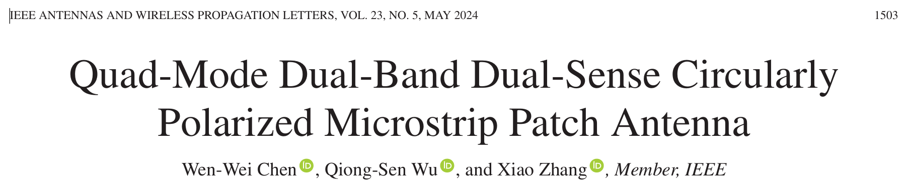
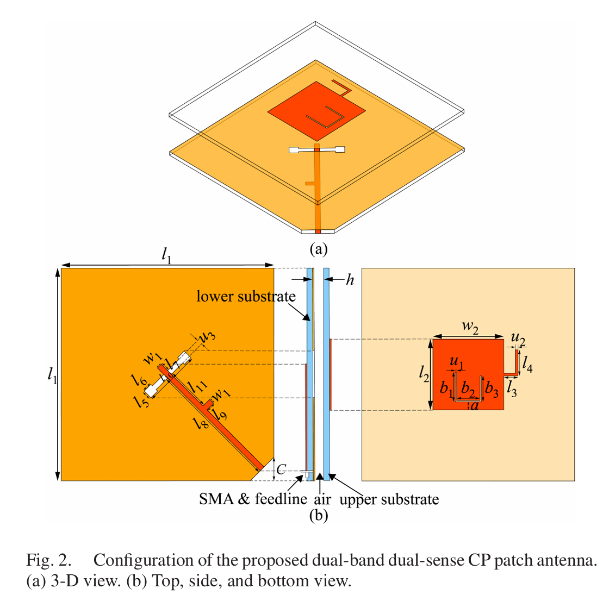
摘要
本文提出了一种四模双频双敏感圆极化(CP)单贴片天线。通过在贴片上加载短桩和U形槽，即可获得四种孔径辐射模式。利用特征模式分析(CMA)揭示了贴片的工作原理。对天线频率比和圆极化感知的控制是通过独立操纵不同的模式来实现的。这是通过改变贴片、U型槽和插头的尺寸来实现的。为了进一步验证所提出的设计方法的有效性，设计并制作了贴片天线样机进行实验验证。在这两个频段，分别得到了左旋圆极化和右旋圆极化。在低频段和高频段测得的阻抗带宽分别为12.7%和13%，对应的3分贝轴比带宽分别为2.47%(3.2-3.28 GHz)和1.17%(4.26-4.31 GHz)。
结构对模式的影响
产生谐振的结构
| 核心结构 | 加载位置 | 产生的谐振模式 | 物理机制（文献原文依据） |
|---|---|---|---|
| 原始方形贴片 | 基础辐射体 | 提供 TM₁₀、TM₀₁、TM₂₀三个固有低阶模式 | 微带贴片的天然谐振特性，TMₘₙ模式对应贴片表面 m×n 个半波电流分布 |
| 开路枝节 | 贴片水平辐射边缘（x 方向侧边） | 1. 重塑 TM₁₀模式（Mode1，f₁）2. 重塑 TM₂₀模式（Mode4，f₄） | 1. 延长 x 方向电流路径，降低 TM₁₀和 TM₂₀的谐振频率2. 打破 TM₂₀模式两个反相辐射边缘的对称性，将其从边射辐射重塑为法向辐射（文献 II.C 节） |
| 非对称 U 型槽 | 贴片中心偏左的垂直方向 | 1. 外 TM₀₁模式（Mode2，f₂）2. 内 TM₀₁模式（Mode3，f₃） | U 型槽作为电流屏障，将原始单一的 TM₀₁模式垂直分裂为两个独立的谐振区域：- 槽外大区域：电流仅在 U 槽外部流动，形成外 TM₀₁- 槽内小区域：U 槽包围的金属形成独立小贴片，激发内 TM₀₁（文献 II.C 节图 4） |
| 空气隙 | 两层基板之间 | 微调所有模式的谐振频率，大幅拓展阻抗带宽 | 降低天线等效介电常数，提高辐射效率，减小介质损耗（文献 II.B 节） |
开路枝节负责产生两个 x 方向电流的模式（Mode1、Mode4），U 型槽负责产生两个 y 方向电流的模式（Mode2、Mode3），两者电流方向垂直、耦合极弱，因此四个模式的谐振频率可独立调控。
圆极化结构
两个正交线极化模式满足 “幅度相等 + 相位差 90°” 条件后的叠加结果。
- 基础条件：产生两对正交的法向线极化模式
开路枝节 + U 型槽共同产生两对正交且均为法向辐射的模式对
低频段正交对：Mode1（y 极化）+ Mode2（x 极化）
高频段正交对：Mode3（x 极化）+ Mode4（y 极化）
- 幅度相等条件：模式谐振频率的精准匹配
三个结构参数可互不干扰地调整对应模式的谐振频率
贴片宽度 l₂：仅调控外 TM₀₁（Mode2，f₂）
U 槽左臂长度 b₁：仅调控内 TM₀₁（Mode3，f₃）
枝节宽度 u₂：仅调控重塑 TM₂₀（Mode4，f₄）
- 相位差 90° 条件：工作频率位于两模式谐振频率之间
当工作频率 f 位于两个正交模式的谐振频率 f_A 和 f_B 之间时（f_A < f < f_B），两个模式的特征角差 ΔCA≈90°
低频段：f₁ < f_CP1 < f₂ → ΔCA=89°（3.08GHz）
高频段：f₃ < f_CP2 < f₄ → ΔCA=82°（4.2GHz）
相位差的符号由模式频率顺序决定，进而决定圆极化旋向（低频段 LHCP、高频段 RHCP）。
仿真记录及其讲解
底层馈线：负责产生两个正交的电流分量（Jx 和 Jy），只控制幅度平衡
上层贴片：负责产生四个谐振模式，通过模式频率顺序控制相位差和旋向
这就是为什么它能实现频率比和旋向的独立调控 —— 因为幅度和相位是由两个完全独立的结构分别控制的。
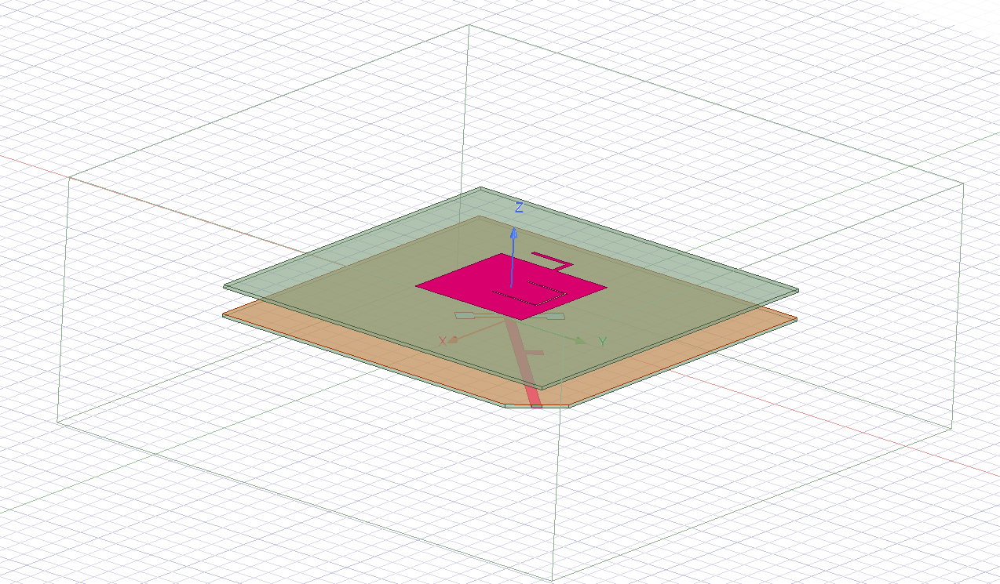
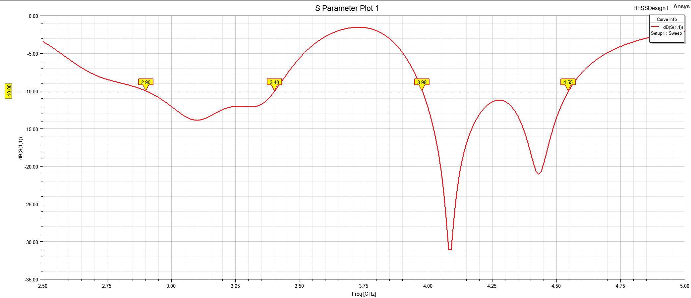
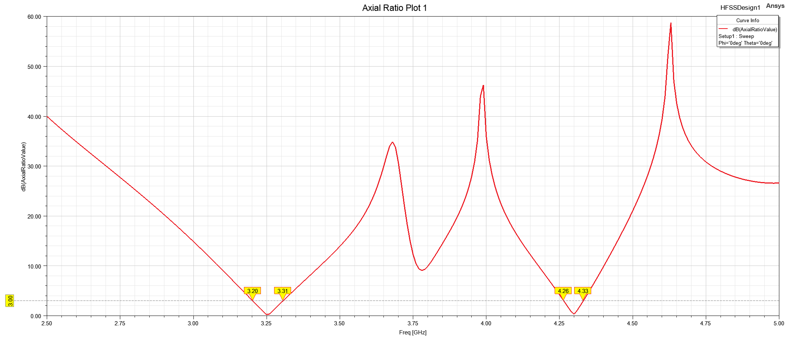
一、第一步：底层馈线与斜向电流分解（端口→微带线）
斜向馈电 = 单端口同时激励 x 和 y 两个正交极化，无需额外正交电桥或双端口馈电。偏置量精准控制(J_x)和(J_y)的幅度比，确保两者近似相等（幅度平衡是圆极化的第一条件）。
二、第二步：H 型缝隙的能量耦合与场转换（微带线→上层贴片）
微带线的斜向电流在接地板上感应出反向电流，当电流流经H 型缝隙时，电流被缝隙截断，在缝隙边缘形成位移电流，进而在缝隙处激发垂直于缝隙的电场。
H 型缝隙的 3 个专属作用（文献明确验证）阻抗匹配独立调节：通过调整 H 型缝隙的臂长和宽度，可单独优化 | S₁₁|，对圆极化轴比几乎无影响。背瓣抑制：相比矩形缝隙，H 型缝隙可将背瓣辐射降低 5~8dB，提高前后比均衡模式激励：H 型结构可同时均匀耦合 x 和 y 方向的能量，保证四个模式的激励幅度一致。缝隙本身不产生圆极化，仅负责将底层馈线的正交能量无干扰地传输到上层贴片。
三、第三步：上层贴片的四模电流激发（核心谐振环节）
H 型缝隙耦合的正交电场在上层贴片表面激发四个独立的谐振模式，每个模式的电流走向完全由方形贴片 + 开路枝节 + 非对称 U 型槽共同决定：
| 结构 | 唯一核心作用 | 对应产生的模式 | 关键可调参数 |
|---|---|---|---|
| 底层斜向微带馈线 | 单端口分解出 x/y 正交电流，控制幅度平衡 | 无（仅分配能量） | 对角线偏置量、末端宽度 |
| H 型缝隙 | 无干扰耦合能量，独立调阻抗匹配 | 无（仅传输能量） | 水平臂长、垂直臂长 |
| 上层方形贴片 | 基础辐射体，提供固有 TM 模式 | 原始 TM₁₀/TM₀₁/TM₂₀ | 边长≈39.2mm（对角线 55.4mm） |
| 水平开路枝节 | 降频 + 把 TM₂₀从边射改成法向辐射 | Mode1（重塑 TM₁₀）、Mode4（重塑 TM₂₀） | 枝节宽度 u₂ |
| 非对称 U 型槽 | 分裂 TM₀₁为内外两个独立模式 | Mode2（外 TM₀₁）、Mode3（内 TM₀₁） | 左臂长度 b₁ |
| 空气隙（h=6mm） | 拓宽带宽、提辐射效率 | 无（仅微调频率） | 厚度 h |
单馈双模式圆极化天线工作原理与结构 - 性能关联分析
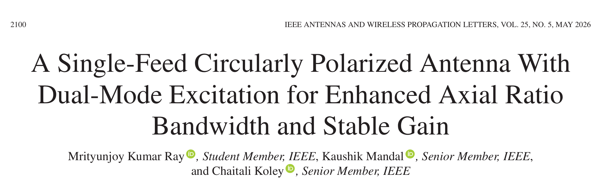
本文提出了一种通过双模激励和寄生条加载来提高3d B轴比带宽的紧凑、低轮廓、单馈源圆极化(CP)天线。与采用短路缝隙的传统CP设计不同，该天线利用圆形贴片上的开口缝隙来激励基频CP模式，该缝隙由气隙支撑。作为一个独立的散热器，缝隙贴片的ARBW仅为2.4%3分贝。为了扩大CP的性能，在顶层衬底的背面引入了四个对称放置的L形状的寄生条(LSP)，从而能够激励分离良好的第二CP模。表面电流和特征模分析(CMA)证实，缝隙贴片和寄生带产生两个具有建设性的逆时针旋转的CP模，在+z方向产生右旋圆极化(RHCP)。两个CP模之间的模式相互作用使3dBARBW提高了四倍，达到10.4%，同时保持了8dBic以上的稳定增益。该天线的阻抗带宽(S11≤-10分贝)为16.7%，交叉极化鉴别率为33分贝。
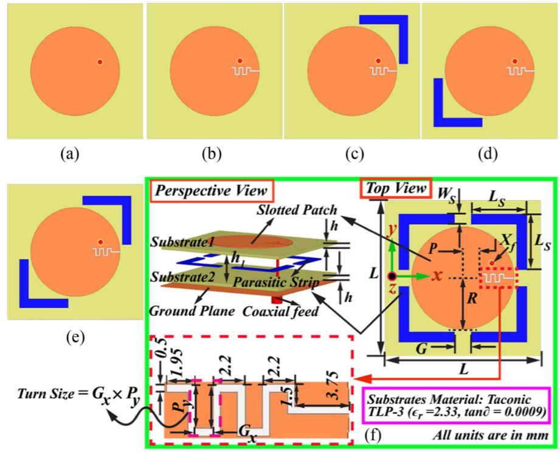
本文突破单模限制，通过两种不同辐射结构激发两个独立且同旋向 (右旋 RHCP) 的 CP 模：
- 第一 CP 模：由开缝圆形贴片自身激发，工作在高频段 (3.2GHz)
- 第二 CP 模：由背面 L 型寄生条带 (LSPS) 与主贴片耦合激发，工作在低频段 (3.01GHz)
| 结构组件 | 位置 | 核心作用 | 性能贡献 |
|---|---|---|---|
| 空气隙 (h₁=3.43mm) | 基板 1 与基板 2 之间 | 1. 引入复合电容抵消同轴探针的自感2. 降低天线 Q 值，使谐振频率更接近3. 减少辐射体与地的强耦合 | 基础阻抗带宽 (IBW) 从无空气隙的～3% 提升至 8.7%(Ant.1)，为后续带宽扩展奠定基础 |
| 圆形贴片 (R=20mm) | 基板 1 顶面 | 主辐射体，承载基模辐射 | 提供基础辐射口径，决定天线的中心谐振频率 |
| 曲折形开缝 (MSS) | 圆形贴片上 | 1. 扰动其中一个正交模 (JM2)，使其电流路径变长2. 使两个正交模 (JM1 水平、JM2 垂直) 产生 90° 相位差3. 比传统直槽有效电长度更长，耦合更强，调谐更灵活 | 激发第一 CP 模(3.291GHz)，将 IBW 从 8.7% 提升至 13.5%(Ant.2)，实现从线极化到圆极化的转变 |
| 四个对称 L 型寄生条带 (LSPS) | 基板 1 底面 | 1. 通过与主贴片的强场耦合激发第二 CP 模(3.01GHz)2. 引入间隙耦合电容，进一步抵消探针电感3. 四个正交排列形成顺序相位激励，优化两个 CP 模的相位差 | 1. 将 ARBW 从 2.4% 提升至 10.4%（最终设计）2. 将 IBW 从 13.5% 提升至 16.7%3. 稳定增益，使 78% 的 IBW 内增益≥8dBic |
| 方形金属地 (L=60.6mm) | 基板 2 底面 | 1. 反射辐射能量，提高增益2. 抑制后向辐射3. 作为天线的接地参考 | 保证前向辐射效率，实现 8-9dBic 的高增益 |
| 同轴馈电 | 偏心位置 (Xf=(12.5,4.5) mm) | 1. 为圆形贴片提供能量2. 偏心馈电优化两个正交模的振幅平衡 | 保证两个正交模等幅激励，是实现圆极化的前提 |
沿 x 轴开槽：MSS 主要扰动垂直模 JM2，使其滞后于水平模 JM1，产生右旋圆极化 (RHCP)
沿 y 轴开槽：MSS 主要扰动水平模 JM1，使其滞后于垂直模 JM2，产生左旋圆极化 (LHCP)
结构演化对性能的递进影响
| 天线版本 | 结构特点 | 阻抗带宽 (IBW) | 3dB 轴比带宽 (ARBW) | 核心性能变化 |
|---|---|---|---|---|
| Ant.1 | 普通圆形贴片 + 空气隙 | 8.7% (3.213-3.506GHz) | 0% (线极化) | 空气隙成功展宽阻抗带宽，但无圆极化特性 |
| Ant.2 | Ant.1 + 曲折形开缝 (MSS) | 13.5% (3.173-3.633GHz) | 2.4% (3.25-3.329GHz) | 激发第一个 CP 模，实现圆极化，但 ARBW 受单模限制 |
| Ant.3/Ant.4 | Ant.2 + 单个对角 LSPS | 12.6% (3.057-3.468GHz) | ~3-4% | 激发第二个 CP 模，但两组模相位差 <55°，中频段 AR 仍> 3dB |
| Ant.5 | Ant.2 + 一对对角 LSPS | 16.3% (2.9-3.415GHz) | 7.5% (2.994-3.228GHz) | 两个 CP 模谐振频率靠近，中频段 AR 降低，IBW 进一步提升 |
| 最终设计 | Ant.2 + 两对正交 LSPS | 16.7% (2.906-3.435GHz) | 10.4% (2.951-3.276GHz) | 两个 CP 模谐振频率适当分离，相位差 > 75°，ARBW 最大化 |
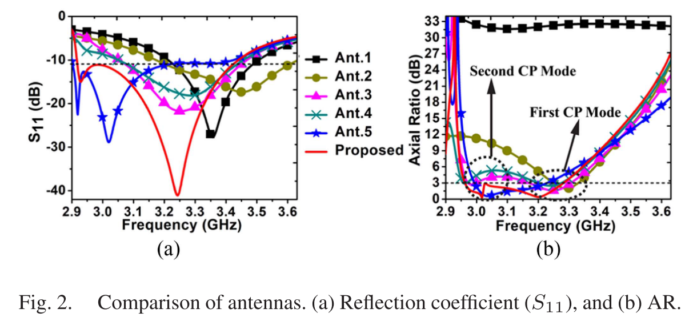
仿真过程分析
Ant 1
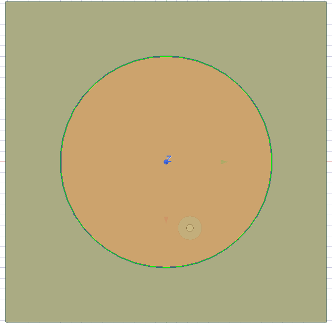
仿真结果：
S参数
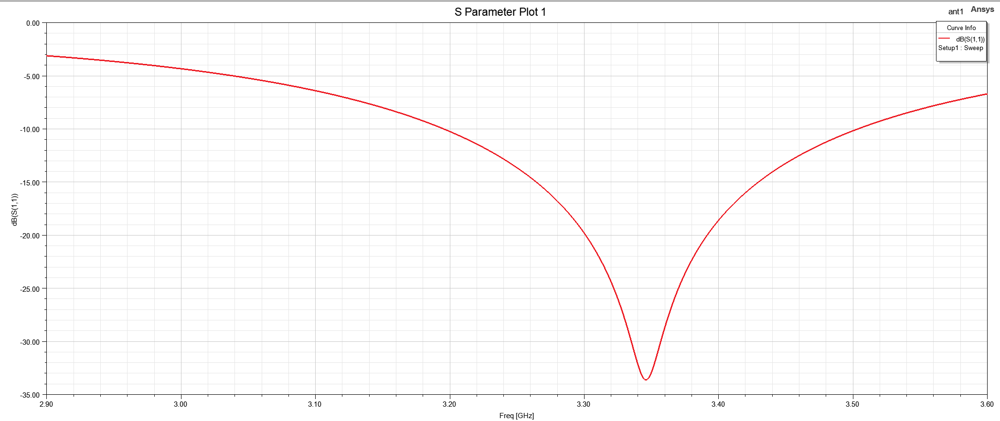
轴比
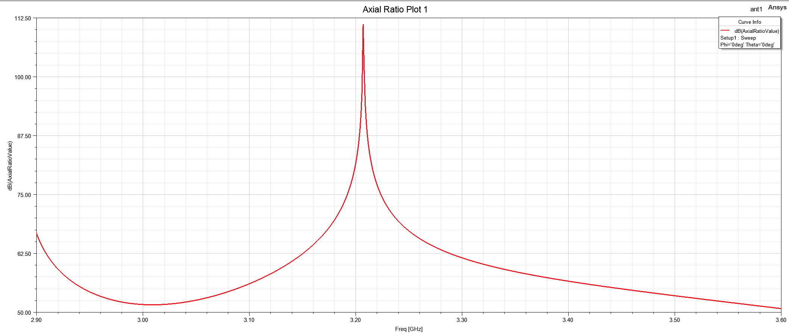
圆形贴片固有的TM11简并模式，一个位于3.35GHz左右的谐振点，线极化。
Ant 2
S参数：
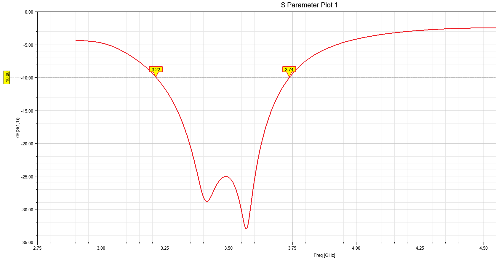
轴比：
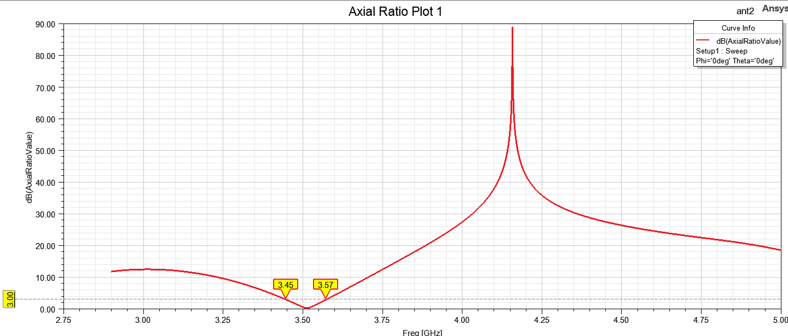
Ant.2（开蛇形槽的圆形贴片）在 3.5GHz 附近出现的两个谐振点，正是该天线实现圆极化的核心物理基础，但它们的来源不是 “圆形贴片一个 + 蛇形槽一个” 的独立谐振，而是圆形贴片的固有 TM₁₁简并模被蛇形槽的不对称扰动分裂成了两个频率分离的正交线极化模。
无槽圆形微带贴片的基模是TM₁₁模，它天然具有二重简并性：存在两个振幅相等、空间正交（水平 JM1 和垂直 JM2）、谐振频率完全相同的电流模式。蛇形槽（MSS）的作用：打破简并，蛇形槽是一个沿 x 轴方向的不对称扰动结构，它会选择性地改变其中一个正交模的电流路径，从而打破 TM₁₁模的简并性，这两个频率分离的正交模，就是在 S₁₁曲线上看到的两个谐振点。
对性能的影响：
阻抗带宽展宽：两个相邻的谐振点叠加
圆极化实现：在两个谐振点之间的频率（3.291GHz），两个正交模的振幅相等、相位差 90°，满足圆极化辐射条件
轴比带宽限制：由于只有一对正交模，相位差 90° 的频率范围很窄，因此 Ant.2 的 3dB ARBW 仅为 2.4%，这也是后续需要引入寄生条带激发第二个 CP 模的原因
具有开缺陷接地结构的宽带圆极化缝隙天线设计
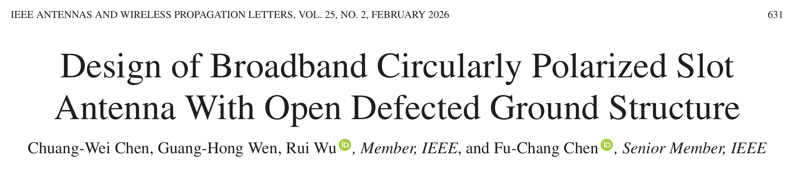
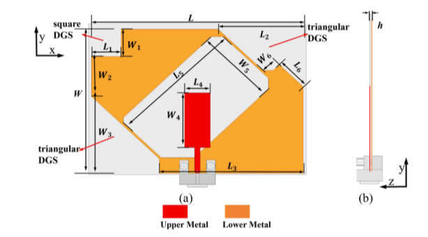
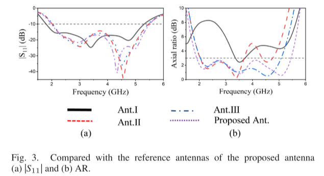
摘要
摘要提出了一种微带馈电的宽带双向圆极化(CP)天线，该天线由一个带有多个开口缺陷接地结构(DGS)的方形缝隙和前端的微带线组成。利用多个改进型DGS和旋转缝隙实现了宽带CP辐射。10分贝阻抗带宽(IBW)约为96.60%(1.9 GHz5.45 GHz)，3分贝轴比带宽(ARBW)约为93.87%(1.99 GHz5.51 GHz)，超宽重叠带宽大于93%。在整个工作频段内测得的孔径增益约为5.07 dBic。
双圆极化的形成原理
该天线为无反射板的平面缝隙结构，能量会同时向基板两侧（+z 和 - z 方向）辐射。由于缝隙辐射的电场在两个方向上具有镜像对称性，导致电场的正交分量相位差符号相反，因此：
基板上方（+z 方向）：右旋圆极化（RHCP）
基板下方（-z 方向）：左旋圆极化（LHCP）
结构功能
提出了一种新颖的微带馈电宽带共面缝隙天线，该天线采用多个结构简单的改进缺陷接地结构(DGS)。对角线上的两个开口三角形DGS主要用于展宽低频ARBW，而左上角的开方DGS主要用于展宽高频ARBW。通过修改DGS和旋转槽也可以在一定程度上改善ARBW。
一种三频三感圆极化正方形缝隙天线的设计
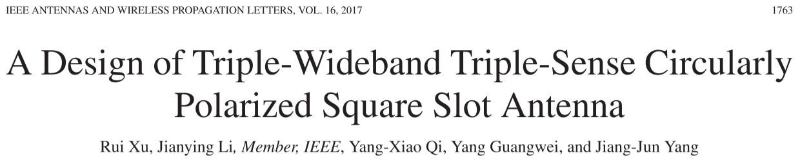
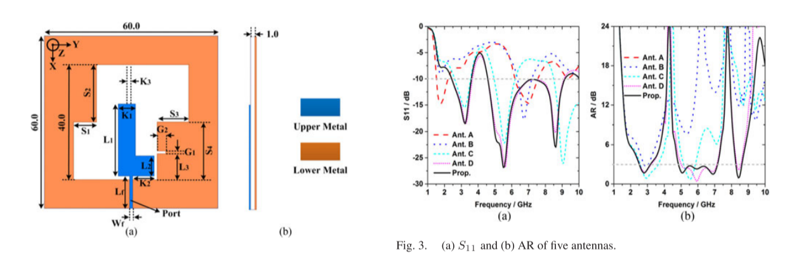
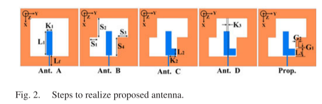
摘要
本文提出了一种适用于三频三感圆极化辐射的微带馈电简单正方形缝隙天线。它由一个L形状的散热器和一个框架下部结构组成，在对角有两个长方形条带。在下地面的右侧矩形条带上切出一条矩形狭缝，主要用于展宽上频段的轴比带宽。该天线在低频段和高频段辐射右旋圆极化波，在中频段辐射左旋圆极化波。制作了该天线，并进行了测试。仿真结果与测量结果吻合较好。测量的阻抗带宽分别为44.0%(2.343.66 GHz)和70.9%(4.559.55 GHz)。三个频段的3dBARBW分别为35.9%(2.40-3.45 GHz)、44.0%(4.65-7.27 GHz)和6.3%(8.13-8.66 GHz)。在3dBARBW内测得的峰值增益分别为4.2、3.7和3.5dBic。
Ant A
只有一条直的x方向条带(K1×L1)和一个框架下地。是一种线极化天线，S11的性能几乎在整个带宽范围内都很差。
Ant B
在较低地面的对角添加两个矩形条带是在天线中实现CP辐射的常见方法。在下地面的对角添加两个矩形条带后，天线的下ARBW有所改善，但S11性能保持不变。
Ant C
AntC 的 y 向小贴片（L 形短臂）：除了优化阻抗、引入高频谐振实现三频，更重要的是为中高频段提供了独立的 y 方向电流源，让中高频也能产生正交电流对。
Ant D
K3 是 L 形辐射体的 “位置微调旋钮”，它改变的是L 形辐射体与接地板两个矩形条的耦合强度和对称性。圆极化需要两个正交电流幅度相等、相位差正好 90°。当 K3=0 时（x 向臂在正中间），它和左右两个矩形条的距离不一样，耦合强度不对称：中频段的两个正交电流，一个强一个弱，相位差也偏离 90°，所以轴比很差，带宽很窄；高频段的 y 向电流和右侧矩形条的耦合太弱，根本满足不了圆极化条件。当把 x 向臂向 - y 轴移动 K3=1.5mm 时，正好让 L 形辐射体和左右两个矩形条的耦合达到最佳对称状态，中频段的两个正交电流在很宽的频率范围内都能保持幅度接近相等、相位差接近 90°，所以中频轴比带宽从 10% 左右直接拓宽到 40%。同时，这个偏移也增强了 y 向短臂和右侧矩形条的耦合，让高频段也第一次满足了圆极化的两个条件。
Ant E
这个缝隙是高频段的 “相位微调器”，它只改变右侧矩形条上的高频电流路径，从而微调高频正交电流的相位差，对低频和中频几乎没有影响。高频段的电流主要集中在L 形的 y 向短臂右侧和接地板的右侧矩形条上，低频和中频的电流基本不流经这个缝隙。没有缝隙时，右侧矩形条上的电流是直线走的，高频段两个正交电流的相位差只在很窄的频率范围内（2.8% 带宽）接近 90°。开了缝隙之后，电流必须绕着缝隙走，相当于增加了这个方向电流的路径长度，也就是改变了它的相位。通过调整缝隙的大小（G1=1mm，G2=3mm），可以精确地把高频段正交电流的相位差 “校准” 到 90° 左右，并且让这个相位差在更宽的频率范围内（6.3% 实测带宽）保持稳定。
利用寄生元件提高宽带圆极化缝隙微带天线的性能
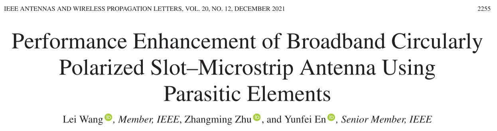
摘要
本文阐述了两种新型的圆形和方形结构的宽带圆极化(CP)缝隙微带天线。圆形SMPA由作为寄生元件的冠片、蚀刻在圆形接地上的四个冠槽和环形环路顺序相馈结构(SPFS)组成。然而，正方形SMPA由四个寄生矩形贴片、四个带有切角的正方形槽和一个正方形环路SPF组成。在圆形SMPA中，寄生冠片和冠槽被用来激励多个CP谐振模式，这些模式由一个环形SPF通过电容耦合馈电。结合这些CP模式，可以提高天线的CP带宽。最终获得了20.6%(5.206.40，5.8 GHz)的3d B轴比带宽和25.8%(4.926.38，5.65 GHz)的−10 d B阻抗带宽，可以占用无线局域网(5.7255.85 GHz)、ITS(5.8 GHz)和WiFi(5.855.925 GHz)频段。
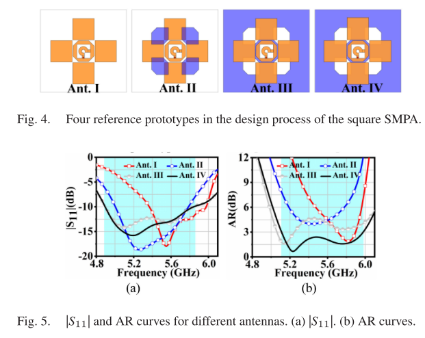
演进过程
1. 基础 CP 模式激发（Ant.I）
仅由方形环 SPFS + 四个寄生方形贴片组成。方形环 SPFS 提供准确的顺序相位，通过电容耦合激励寄生方形贴片，使贴片表面产生旋转电流，在 5.8GHz 处激发单个 CP 谐振模式。此时天线阻抗带宽和轴比带宽较窄。
2. 堆叠模式拓展（Ant.II）
在 Ant.I 上方增加四个切角方形贴片作为堆叠寄生单元，激发 5.4GHz 处的第二个 CP 谐振点。两个 CP 模式叠加使带宽有所提升，但堆叠结构引入了空气间隙，显著增加了天线剖面，不符合低剖面应用需求。
3. 缺陷地模式引入（Ant.III）
为在不增加剖面的前提下拓宽带宽，在方形接地板上蚀刻四个切角方形槽。槽结构被馈电网络耦合激励，产生额外的 CP 谐振模式，与寄生贴片的 CP 模式叠加，初步实现了带宽拓展，但此时轴比性能尚未达到最优。
4. 最终优化（Ant.IV）
将方形寄生贴片替换为矩形寄生贴片，通过调整贴片的长宽比优化两个 CP 模式的谐振频率和阻抗匹配，使两个模式的轴比曲线更平滑地重叠，最终实现宽带圆极化辐射。
5. 圆极化辐射机制
方形环 SPFS 输出的顺序相位同时激励两个辐射体：
寄生矩形贴片表面产生逆时针旋转的电流
接地板上切角方形槽的边缘也产生逆时针旋转的电流
两者叠加后，总表面电流在 0° 和 90° 相位下保持逆时针旋转，从而在 + z 方向辐射 ** 右旋圆极化（RHCP）** 波。
结构对功能的影响
1. 方形环 SPFS：圆极化的基础保障
- 弧形条 + 切角方形环的组合结构，无需复杂的功分器和移相器，即可提供稳定的 0°/90°/180°/270° 顺序相位，保证了圆极化的纯度
- 相比 SIW 馈电网络，结构更简单、加工成本更低、易于与电路集成
- 馈电环的尺寸直接影响相位差的准确性，进而影响轴比带宽和圆极化纯度
2. 寄生矩形贴片：主 CP 模式的载体
- 贴片与馈电环的间隙G1决定了电容耦合强度，直接影响阻抗匹配和能量传输效率
- 将方形贴片改为矩形贴片（Ant.IV），通过调整长宽比优化了谐振频率，使两个 CP 模式的频率间隔更合理，实现了更宽的轴比带宽
- 贴片尺寸主要影响高频段的谐振特性和增益
3. 切角方形槽：低剖面宽带的核心
- 这是该天线最关键的创新结构，在不增加天线剖面的前提下，激发了额外的 CP 谐振模式，与贴片模式叠加后显著拓宽了轴比带宽
- 槽的尺寸(L2/W2)主要影响低频段的谐振频率，切角尺寸D5则控制正交简并模的相位差，直接影响轴比性能
- 槽结构同时改变了接地板的电流分布，改善了天线的阻抗匹配特性，拓宽了阻抗带宽
4. 单层基板设计：低剖面优势
- 采用单层介质基板，避免了堆叠结构的空气间隙，剖面高度仅为(0.028\lambda_0)（@5.5GHz），远低于同性能的堆叠式圆极化天线
- 低介电常数、低损耗的基板材料，保证了天线的辐射效率和带宽潜力